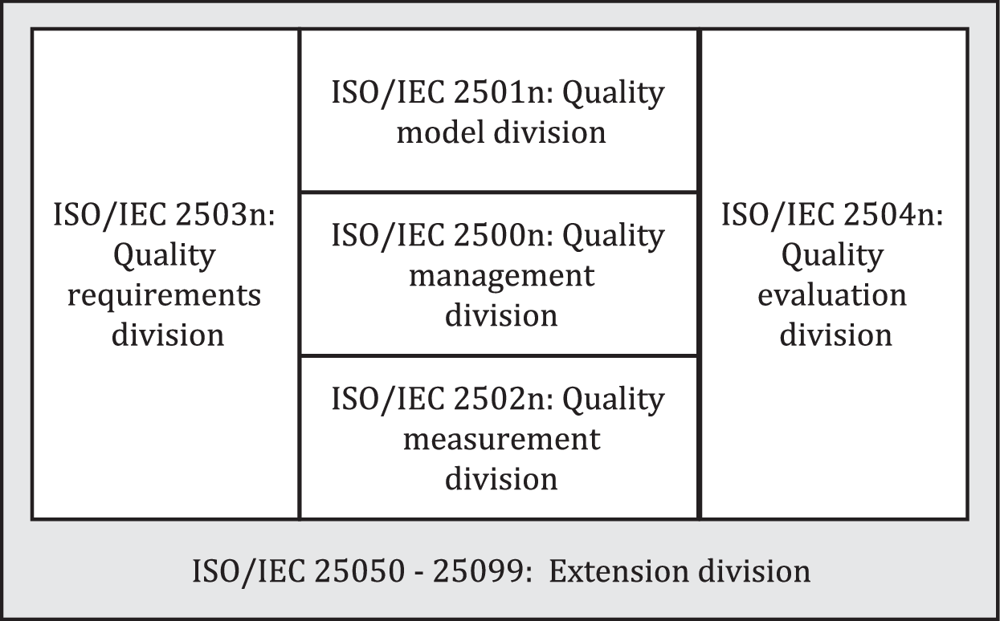

ISO/IEC 25002:2024 puts forward a framework for defining quality models, made of quality characteristics and sub-characteristics. A quality model is a list of these which define quality down into specifics, allowing an app to be reliable, flexible or secure (or all three), rather than just high quality.
The standard itself acts as a guide for how quality models work. It doesn’t actually list the characteristics or otherwise, but describes how they work, are structured (characteristics which are also further broken down into sub-characteristics), and how it connects to measuring, specifying and evaluating quality.

The SQuaRE family (Systems and software Quality Requirements and Evaluation) of standards are responsible for each part of quality management - see the above figure. It makes the other standards as specifics for parts of the quality model, and acts as a guide for how they work instead.
ISO/IEC 25002:2024